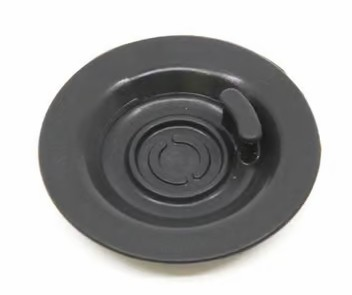

1 CUP and 2 CUP take turns
Cleaning cycle due
You can keep making coffee. Press STEAM to hide the light for now.
You'll need: 1 cleaning tablet or sachet
Run the cleaning cycle · 5 minFour buttons in a row on yours? That's the plain Bambino. Only three big buttons on yours? That's the Plus.
1 CUP and 2 CUP take turns
You can keep making coffee. Press STEAM to hide the light for now.
You'll need: 1 cleaning tablet or sachet
Run the cleaning cycle · 5 min1 CUP + STEAM take turns with 2 CUP
You can keep making coffee. Any button hides the light, or wait ~15 s.
You'll need: 1 sachet of descaler
Descale it · 25 minNothing lights up
Fill it to MAX and push the tank down until it sits flush.
The two small milk lights step downward
Push the wand all the way down. It cleans itself once it's there.
Milk lights all flash, STEAM is off
1 CUP and 2 CUP flash together
Nothing's wrong. Holding 1 CUP + 2 CUP starts it. Press STEAM to leave.
2 CUP keeps flashing
You can keep making coffee. Press any button to hide the light for now.
You'll need: 1 sachet of descaler
Clean & descale it · 25 minAll lights flash 6 times
Fill it to MAX and push the tank down until it sits flush.
1 CUP and 2 CUP blink while the wand spits water
Nothing's wrong. It stops on its own.
1 CUP and 2 CUP flash together
Nothing's wrong. Holding 1 CUP + 2 CUP starts it. Press STEAM or wait 30 s to leave.
Don't see your pattern? Check the troubleshooting pages of the Bambino Plus manualBambino manual (PDF), or contact Breville / Sage support.
Two different products for two different jobs. They're not interchangeable.
The Bambino only needs descaler. It has no separate tablet cleaning cycle: its clean & descale does both jobs.
The Plus needs both, at different times. The flashing pattern tells you which: see the lights.
Washes old coffee oil out of the group head (where the handle locks in), using a cleaning tablet.
Due when 1 CUP and 2 CUP take turns flashing, about every 200 shots.
Takes about 5 min.

The machine must be ON. The same button hold while it's off resets your shot sizes instead.
Yes. Turn the machine off (1 CUP + STEAM), then hold 2 CUP + STEAM for 5 s.
Check the cycle ran to the end and that you started it with the machine on.
Owners report that unplugging for ~10 minutes sometimes clears a stuck alert. That's forum advice, not from the manual.
Breville's website shows STEAM in the button hold; the printed manual says 1 CUP + 2 CUP. If one doesn't work, try the other.
Dissolves limescale inside the machine. The Bambino has no separate cleaning cycle: this one does both.
Due when 1 CUP + STEAM take turns with 2 CUP after switching on.
Takes about 25 min.
Due when 2 CUP keeps flashing.
Takes about 25 min.
Don't take out or fully empty the tank mid-cycle, and keep the drip tray in. Hot steam can escape.
Both cleaning and descale due? Descale first, rinse the tank, then run the cleaning cycle with fresh water.
Follow the light: the manual gives no fixed schedule. Hard water means more often. Slow flow, weak steam or lukewarm coffee are early signs.
These steps are from the current BES450 manual. Older units can differ: check the manual that came with yours, or Breville's descale video (linked at the bottom).
Dried milk is clogging the tip. Usually it's because the wand wasn't pushed back down after steaming.
The milk lights all flash and STEAM is off.